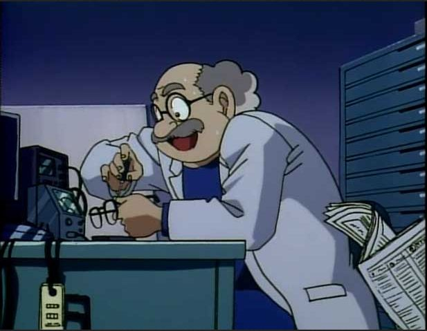
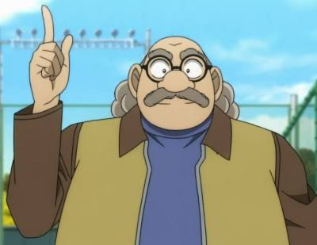

About Professor Agasa
Hiroshi Agasa is an inventor and Shinichi's next-door neighbor. He makes his living with a wide number of patents and inventions, including video games (of which the Detective Boys are enthusiastic test players). While many of his inventions are useless or have even damaged his in-house research laboratory, Agasa has been successful enough to live in a large house and even rebuild it when necessary. He has been a friend of Shinichi and Ran since their childhood years. (detectiveconanworld.com)

Professor Agasa in Action (Pinterest)
Professor Agasa's Characteristics
As an inventor surrounded by various people of all ages especially detectives, he's:
- highly intelligent
- jovial
- caring
- outgoing
- trustworthy to keep secrets

Professor Agasa (Baidu Wiki)
Professor Agasa's Friends and Family
In his life, Professor Agasa is surrounded by these wonderful people:
- Conan /Shinichi: A high school student detective whose body turned to a kid after getting drugged APTX-486.
- Ran Mouri: Kudo's close girl friend since they where kids, a Karate athlete.
- Kogoro Mouri: Ran Mori's father, a private detective.
- Inspector Megure: A police inspector at Beika Police Station.
- Officer Wataru Takagi: Police officers at Beika Police Station.
- Genta, Ayumi, Mitsuhiko: Conan's classmates who like to play detectives but sometimes help more than the real police. They often lead Conan to cases in a bright peaceful day.
- Ai Haibara: A researcher who developed APTX-486 that turned Kudo's body to Conan. She took the same drug deliberately to hide from the organization she once belonged to.
- Eri Kisaki: Ran's mother, also Kogoro's wife. A famous private lawyer.
- Yusaku Kudo: Shinichi's father, a wellknown mystery writer.
- Yukiko Kudo: Shinichi's mother, an actrist.
- Sonoko Suzuki: Ran's school friend. She comes from a typoon family. Her family's wealth and network sometime help solving the case.
- Heiji Hattori: Also a high school student detective. A friend of Kudo since they were kids.
- Kazuha Toyama: Heiji's close girl friend. Just like Ran and Kudo, they were also friends since kids.